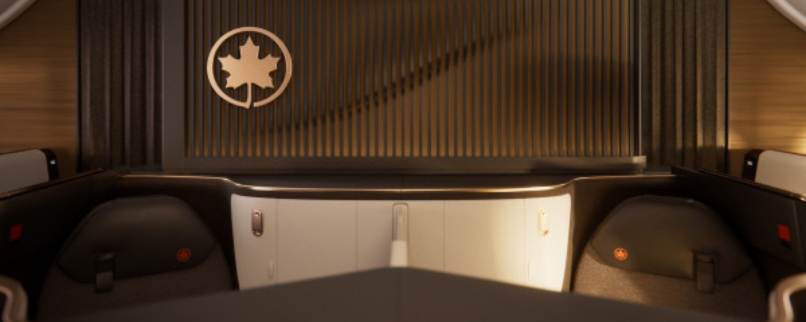
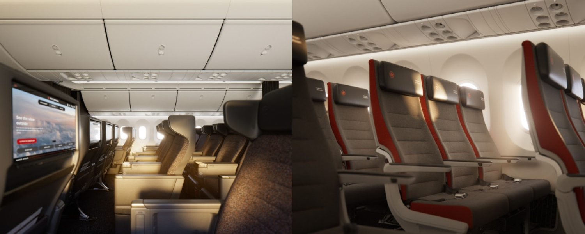

April 17, 2026
Air Canada vs WestJet: Key Differences

Air Canada and WestJet are Canada's two largest airlines. Between them, they carry the vast majority of Canadian air travellers every single year.
But they are not the same airline, and the differences matter depending on where you are flying, what you value, and how you want to earn and redeem points.
Here is a practical breakdown of the key differences between the two carriers.
Price & Fare Structure
The honest answer on pricing is that it depends heavily on the route and the timing. Neither airline is consistently cheaper across the board.
That said, there are some structural differences worth knowing.
Air Canada's fare tiers
- Basic — lowest price, no seat selection, no changes, no refunds
- Standard — carry-on included, some flexibility
- Flex — changes allowed, carry-on included
- Comfort — preferred seating, same-day changes
- Latitude — fully flexible, upgrades eligible
WestJet's fare tiers
- EconoFlex — most restrictive, designed for budget travel
- Econo — standard economy fare
- Premium — extra legroom, priority boarding
- Business — on select routes, fully flat or enhanced seating
Both airlines have introduced ultra-low base fares with stripped-back inclusions, so always read the fine print before assuming a cheap fare includes a carry-on bag or a seat assignment.
For domestic routes, it is worth checking both airlines every time. The price difference on the same route can be significant depending on the day and how far in advance you book.
Routes & Network
This is one of the clearest differences between the two airlines.
Air Canada has a much larger international network. Through its membership in Star Alliance — the world's largest airline alliance — Air Canada connects you to hundreds of partner airlines and destinations globally. If you are flying to Europe, Asia, South America, or beyond, Air Canada will generally have more nonstop and one-stop options from Canadian cities.
WestJet's strengths
WestJet focuses on domestic routes, transborder U.S. flights, and sun destinations. It covers Canada well, particularly in Western Canada where it has historically had a strong presence, and it flies popular leisure routes to Mexico, the Caribbean, and Hawaii.
WestJet is a member of SkyTeam, which it joined in 2025. That partnership gives WestJet passengers more options internationally through Delta, Air France-KLM, and other SkyTeam carriers.
Air Canada's strengths
Air Canada connects Canada to more nonstop long-haul destinations, particularly from its Toronto hub. It also operates a wider domestic network through Air Canada Express, reaching smaller Canadian cities that WestJet does not serve.
If your trip involves a connection beyond North America or the Caribbean, Air Canada's network is generally broader and better connected.
Baggage Policy

Baggage rules vary by fare class on both airlines, and this is one area where the details matter a lot.
Air Canada
- Basic fare: personal item only, no carry-on included
- Standard and above: carry-on included
- Checked bags are extra unless your fare or status includes them
- First checked bag typically costs $35–$45 CAD on domestic routes
WestJet
- EconoFlex fare: personal item only
- Econo and above: carry-on included
- Checked bags are extra on most fares
- First checked bag typically costs $35–$45 CAD on domestic routes
The two airlines are fairly similar on baggage pricing at comparable fare levels. The biggest thing to watch for is the entry-level fare on both airlines, which strips out the carry-on allowance entirely. If you are travelling with anything beyond a small personal item, make sure your fare actually includes it before you get to the airport.
Loyalty Programs
This is where the gap between the two airlines is most significant for frequent travellers and points enthusiasts.
Air Canada: Aeroplan
Aeroplan is widely considered one of the best loyalty programs available to Canadians. Here is why it stands out:
- Transfer partners — Aeroplan points transfer in from American Express Membership Rewards, TD, CIBC, RBC, and more. That gives you multiple ways to top up your balance.
- Partner redemptions — Because Air Canada is part of Star Alliance, you can redeem Aeroplan points on dozens of partner airlines, including Lufthansa, United, Singapore Airlines, and ANA. Many of these partner redemptions offer outstanding value, especially in business class.
- Stopovers and open-jaws — Aeroplan allows stopovers and open-jaw itineraries on many award bookings, which lets you see more destinations for fewer points.
- No fuel surcharges on most partners — Unlike some programs, Aeroplan does not pass carrier-imposed surcharges on to you for most Star Alliance partners.
WestJet: WestJet Rewards
WestJet Rewards operates as a cash-back style program. You earn WestJet dollars based on your spend, and redeem them directly towards future WestJet flights or vacation packages. It is simple and easy to understand, which is genuinely a feature for many travellers.
- Earn 1–5% back in WestJet dollars depending on your tier and fare class
- Redeem as a direct discount on WestJet bookings
- WestJet RBC Mastercard accelerates earnings
- No complex award charts or partner redemptions to navigate
The tradeoff is that WestJet Rewards has a lower ceiling than Aeroplan. If your goal is booking business class flights at a fraction of the retail price, Aeroplan gives you far more tools to do that. WestJet Rewards is better suited to travellers who fly WestJet regularly and want a straightforward way to save on future trips.
Onboard Experience
In economy, both airlines offer a fairly similar domestic experience. You get a seat, a small tray table, and access to snacks and drinks for purchase or included depending on your route.
A few things worth knowing:
Legroom
Seat pitch varies by aircraft and configuration. Air Canada mainline economy typically offers 30–32 inches of pitch. WestJet has recently reconfigured a portion of its 737 fleet with tighter seating, bringing pitch down to approximately 28 inches on some aircraft — the lowest of any major Canadian carrier. If legroom matters to you, it is worth checking the specific aircraft before you book on either airline.
In-flight entertainment
Air Canada offers seatback screens on mainline aircraft and a device streaming option on Air Canada Rouge. WestJet has moved primarily to a device-streaming model on most of its fleet, with Wi-Fi available for purchase on many routes.
Premium cabins
On long-haul international routes, Air Canada's Signature Class is a strong product with lie-flat seats, direct aisle access, and a solid meal service. WestJet's Business cabin is available on select long-haul routes and is competitive, though Air Canada has more wide-body aircraft with dedicated premium cabin configurations.
For domestic flights, both airlines offer a business or premium economy product that is essentially an economy seat with a blocked middle seat. Neither airline offers a true premium cabin on short domestic segments.
Reliability & On-Time Performance
On-time performance varies by season, route, and year — and both airlines have had their fair share of operational challenges. That said, there are a few patterns worth knowing.
Air Canada's size and hub complexity means disruptions at Toronto Pearson can cascade across the network. If your connection runs through YYZ, build in extra buffer time when possible.
When things go wrong
Both airlines are subject to Canada's Air Passenger Protection Regulations, which require compensation for delays and cancellations within the airline's control. The rules apply equally to both carriers, so your passenger rights are the same regardless of which one you fly.
Where the experience can differ is in how each airline handles irregular operations in practice. Air Canada's larger network generally offers more rebooking options when there is a disruption, simply because there are more flights to put you on. WestJet's smaller schedule can mean longer waits for the next available seat on busy routes.
The Bottom Line

Neither airline is the right choice for every trip. Here is a simple framework for deciding:
Choose Air Canada if you:
- Are flying internationally and want the most nonstop options
- Want to earn and redeem Aeroplan points with maximum flexibility
- Value access to a wide range of partner airlines through Star Alliance
- Are chasing business class redemptions at a fraction of retail price
Choose WestJet if you:
- Are flying a domestic or sun destination route where WestJet is competitively priced
- Prefer a simple, straightforward loyalty program
- Are based in Western Canada where WestJet has strong domestic frequency
- Are booking a leisure trip to the Caribbean, Mexico, or Hawaii
In practice, most Canadian travellers will end up flying both at different points. The key is knowing what each airline does well so you can pick the right one for each trip — and make sure you are earning points along the way.
Happy flying!